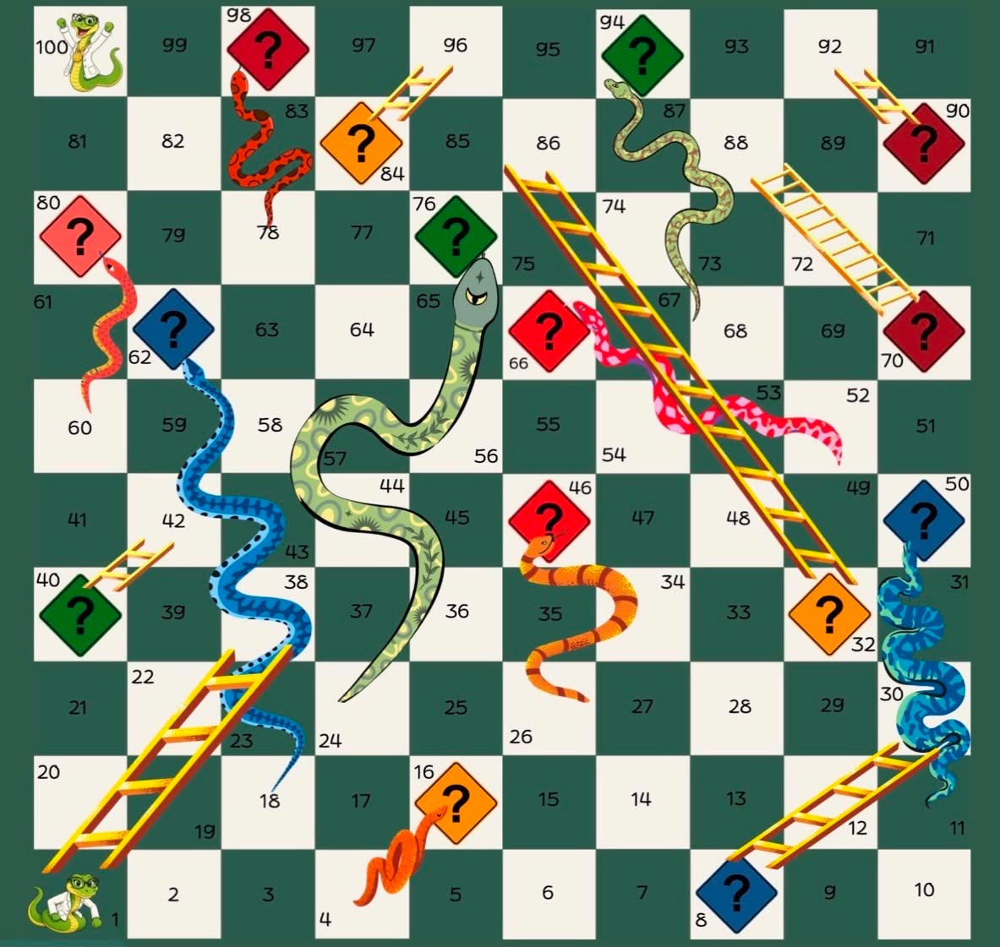

Environment, Occupational Health and Safety
PRDO141
Maricris P. Lim, OD, LPT, FPOVDR
Beloncio, Jidayne Louis D.
Buencamino, Darlyn Joy R.
Buencamino, Polo Felipe S.
Garcia, Alyssa R.
PRDO141
Maricris P. Lim, OD, LPT, FPOVDR
Beloncio, Jidayne Louis D.
Buencamino, Darlyn Joy R.
Buencamino, Polo Felipe S.
Garcia, Alyssa R.

This educational board game combines the classic Snakes and Ladders with ISO 7010 Safety Signs. Players must answer questions based on safety sign categories to earn their way up ladders and avoid sliding down snakes. The game promotes knowledge of internationally recognized safety signs while making learning enjoyable and interactive.

The game may be played by two to six players.
A-02. ORDER OF PLAYEach Player rolls the die once.
The player with the highest roll goes first.
Play continues clockwise.
A-03. DISTRIBUTION OF TOKENSEach player selects one token and places it outside the board
Shuffle all dice decks separately and place them beside the board according to their category.